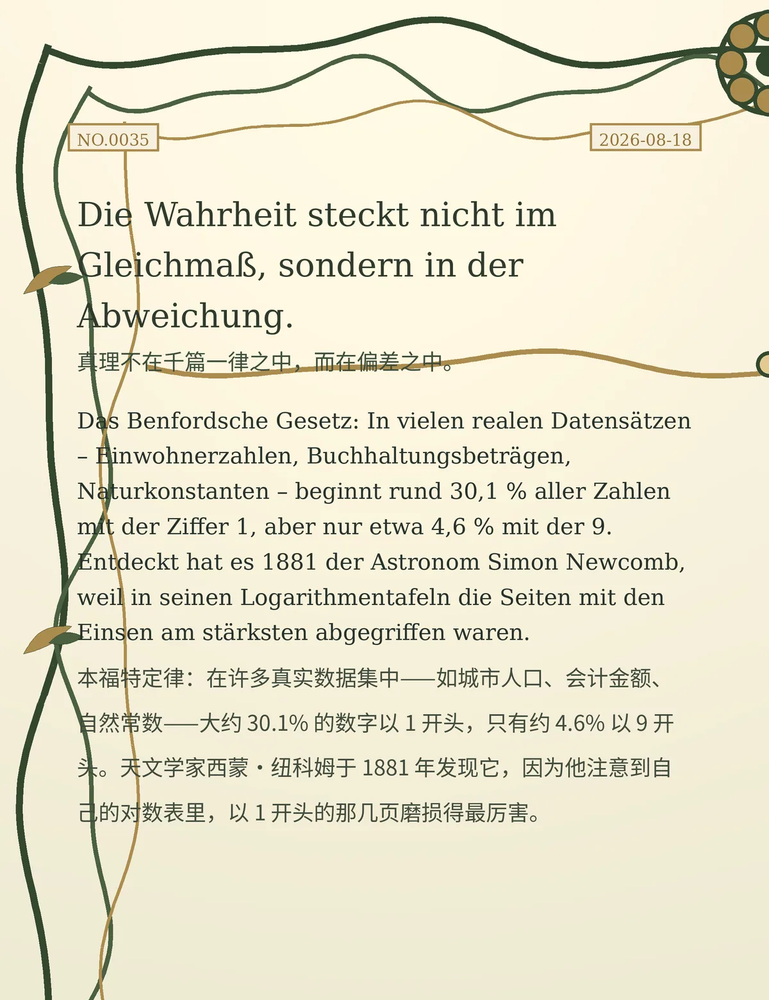

Die Wahrheit steckt nicht im Gleichmaß, sondern in der Abweichung. （真理不在千篇一律之中，而在偏差之中。）
Das Benfordsche Gesetz: In vielen realen Datensätzen – Einwohnerzahlen, Buchhaltungsbeträgen, Naturkonstanten – beginnt rund 30,1 % aller Zahlen mit der Ziffer 1, aber nur etwa 4,6 % mit der 9. Entdeckt hat es 1881 der Astronom Simon Newcomb, weil in seinen Logarithmentafeln die Seiten mit den Einsen am stärksten abgegriffen waren. （本福特定律：在许多真实数据集中——如城市人口、会计金额、自然常数——大约 30.1% 的数字以 1 开头，只有约 4.6% 以 9 开头。天文学家西蒙·纽科姆于 1881 年发现它，因为他注意到自己的对数表里，以 1 开头的那几页磨损得最厉害。）